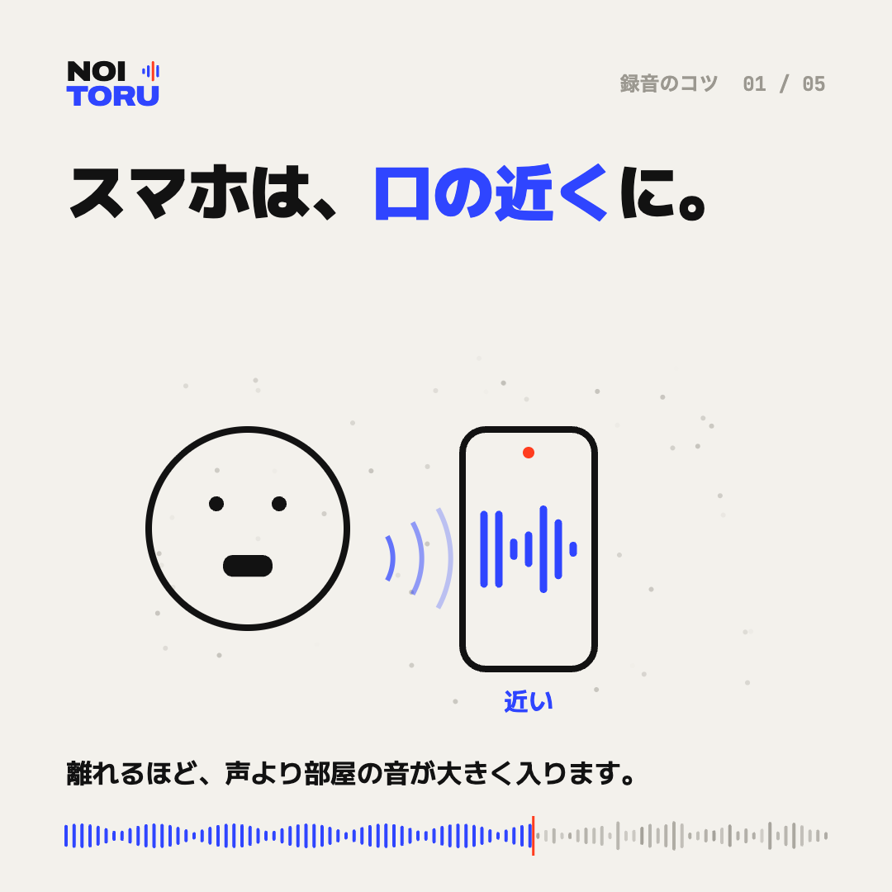

スマホで録るときは、口の近くに置く

離れるほど、声より部屋の音が入る
録音機に届く声は、口から離れるほど小さくなります。一方で、エアコンや外の車の音のように部屋全体に広がっている音は、置き場所を変えてもあまり変わりません。机の向こう側に置いた録音では、声と雑音の差が小さくなり、あとから雑音だけを減らすのが難しくなります。
目安は、口から30センチほど
一人で話すなら、口から30センチ前後がひとつの目安です。近すぎると息が「ボッ」と当たったり、声が割れたりするので、口の正面より少し横にずらして置くと防げます。
二人以上で話すとき
対談やインタビューでは、録音機を二人のちょうど真ん中に置くか、声の小さい人のほうへ少し寄せます。スマホが二台あれば、それぞれの手元に一台ずつ置いて録っておくと、あとで聞き取りにくい箇所を補えます。
本番の前に、10秒だけ試し録り
本番の前に少し話して聞き返すと、声の大きさや雑音の入り方がわかります。声が小さすぎる、触る音が入る、といったことに録る前に気づけます。